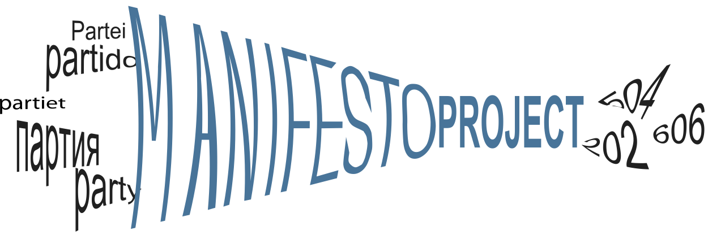
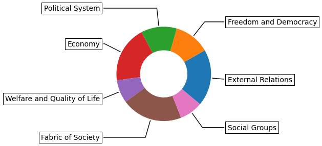
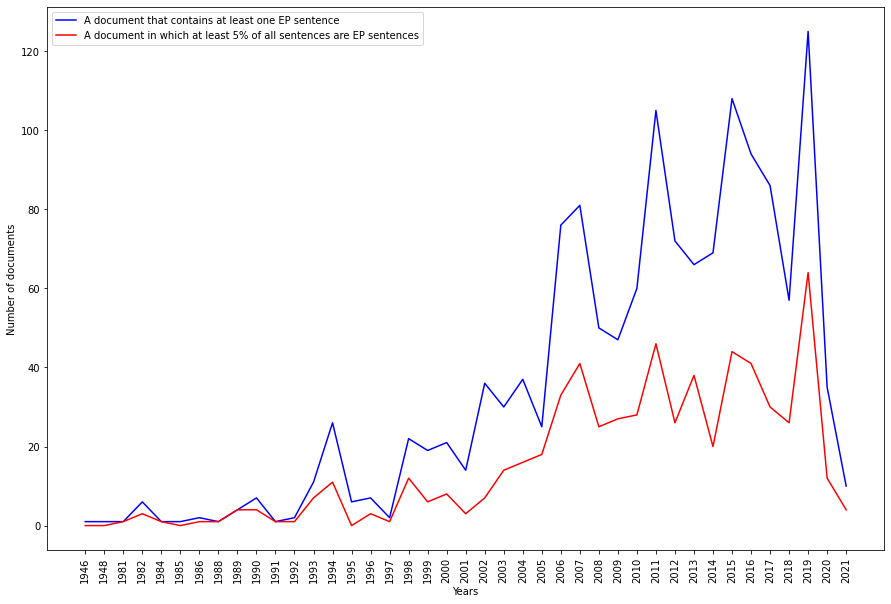
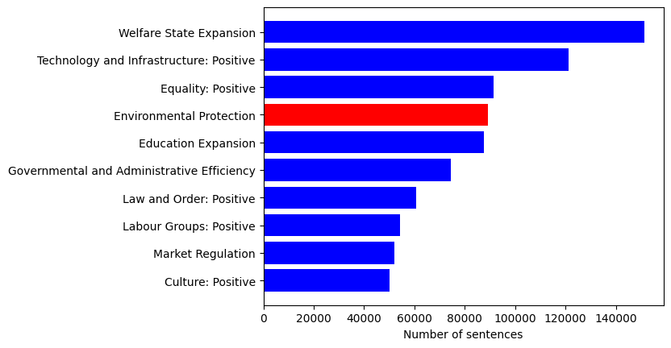
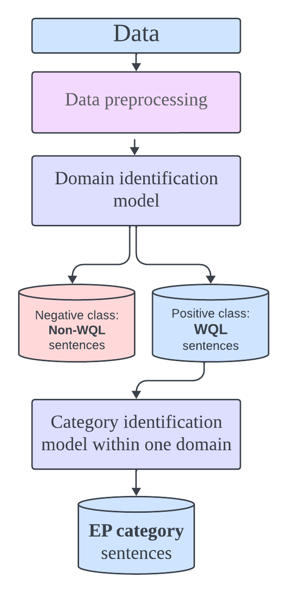
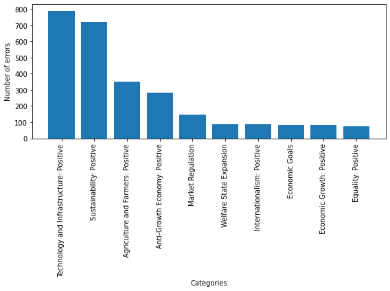
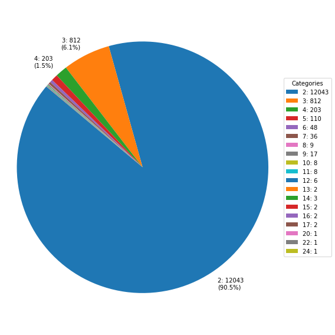

Individual Research on Environmental Policy Detection
Built text classification models using political data from the Manifesto Corpus.
Developed one-step and two-step classification models using BERT, RoBERTa, and XLM-RoBERTa.
Implemented sophisticated NLP techniques for accurate agenda detection.
Achieved significant improvements in classification accuracy compared to baseline models.
Poster Presentation
Introduction

Figure 1: Manifesto Project Logo
This work presents a binary classification model that uses hierarchical topic data from the Manifesto Political Corpus to determine if a sentence pertains to environmental protection.
Data
The Manifesto Corpus is a comprehensive collection of multilingual, annotated electoral programs. Version 2022a of Manifesto Project Dataset is used for the current analysis. The data from 1216 political parties from 1945 to 2022 was sourced from 779 elections in 56 democracies.
There are 139 categories, which are assigned to 7 policy areas (domains).

Figure 2: Distribution of the categories among seven policy areas of the Manifesto Corpus
Datasets used for cross-sector transferability evaluation:
The environmental claim detection dataset is a dataset for detecting real-world environmental claims made by companies.
The U.S. Securities and Exchange Commission (SEC) 10-K files dataset is an annual regulatory filings in which listed companies in the US are required to self-identify climate-related risks that are material to their business.
№ Sentences
Positive class
Negative class
Manifesto train dataset
5600
50400
Manifesto test dataset
77385
7475
Environmental claims
665
1982
10-K files
125
3175
Motivation

Figure 3: The frequency with which the environmental protection category appears in electoral campaigns between 1946 and 2021

Figure 4: The ten most frequent categories in the Manifesto corpus
Research Goals
Conduct a series of experiments to reach the best results in a binary text classification task for environmental agenda detection using only the Manifesto corpus data.
Utilizing environmental datasets from the financial sector, evaluate the model's cross-sector applicability.
Approach
Due to the hierarchical nature of the corpus, two methods were applied:
The one-step classification method is an approach that focuses solely on the category, ignoring the domain label.
The two-step classification method involves the use of both domain and category labels.

Figure 5: Model architecture utilizing the two-step classification method
The text classification model for identifying environmental protection context is developed through four steps:
Compare various balance combinations of the positive class by applying machine learning models to both methods.
Select the top 3 balance combinations and apply a large language model XLM-RoBERTa.
Optimization.
Evaluating the cross-sector transferability of the best-performing model.
Results
№
Model
Positive class %
Accuracy
F1 Score (Weighted)
Macro Average
Positive class F1
Negative class F1
1
One-step
10%
0.93
0.94
0.81
0.96
0.66
2
Two-step: domain
40%
0.80
0.80
0.78
0.84
0.71
3
Two-step: category
30%
0.94
0.94
0.93
0.96
0.89
4
Two-step: combination
30%, 40%
0.69
0.61
0.53
0.80
0.26
The parameters of the XLM-RoBERTa model:
Maximum sequence length: 151 or 135. There is an option because the data for tokenization changed depending on the balance combination.
Training batch size: 16
Learning rate: 2e-5.
Optimizer: Adam optimization algorithm
Model №
Train dataset
Test dataset
Accuracy
F1 score (weighted)
Macro Average
Precision
Recall
1
Manifesto
Manifesto
0.93
0.94
0.81
0.61
0.71
2
Manifesto
Environmental claims
0.77
0.78
0.73
0.52
0.77
3
Environmental claims
Manifesto
0.91
0.91
0.69
0.49
0.39
4
Manifesto
10-K files
0.93
0.94
0.70
0.3
0.74
5
10-K files
Manifesto
0.91
0.87
0.48
0
0
Error Analysis
When the model was tested on the 84860-sentence test set of the manifesto corpus after being trained on the Manifesto dataset, it predicted incorrectly 5586 sentences.

Figure 6: The Top 10 categories where the model mispredicted sentences as positive EP category (Manifesto test dataset)
False positive instances accounted for 3432 of the 5586 incorrectly predicted sentences, or 61 percent of the total. Examples:
Sentence: 'Our energy consumption must be reduced'. True label: 'Sustainability: Positive'.
Sentence: 'Reduce CO2 emissions from agriculture'. True label: 'Agriculture and Farmers: Positive'.
False negative instances made up 2154 of the 5586 incorrectly predicted sentences, or 39 percent of the total. Examples:
Sentence: 'The main sectoral proposals can be summarized as follows:'
Sentence: 'What problems do we consider to be key?'

Figure 7: The distribution of duplicates in the Manifesto corpus based on how many times they are repeated
The corpus contains 1623580 annotated sentences, with 63821 repeated. 50507 of these are exact duplicates, indicating 13314 repetitions are in separate categories.
Future Directions
Certain categories make up the majority of the false error cases.
Duplication errors should be considered before creating the datasets.
The specific annotation method for the Manifesto corpus should be considered.
References
[1] Pola Lehmann, Tobias Burst, Theres Matthieß, Sven Regel, Andrea Volkens, Bernhard Weßels, and Lisa Zehnter. The manifesto data collection. manifesto project (mrg/cmp/marpor). version 2022a, 2022.
[2] Dominik Stammbach, Nicolas Webersinke, Julia Anna Bingler, Mathias Kraus, and Markus Leippold. Environmental claim detection, 2023.
[3] Andres Velez-Calle and Cristina Robledo-Ardila. Exploring the u.s. securities and exchange commission’s edgar database by sampling joint venture contracts. International Journal of Disclosure and Governance, 17, 09 2020.